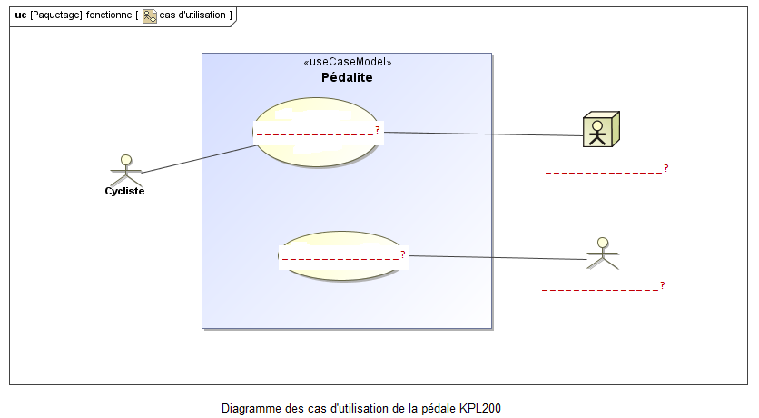

CAS D'UTILISATION
Le diagramme des cas d'utilisation retenu est le suivant :

Diagramme des cas d'utilisation de la pédale KPL200
- Compléter le diagramme ci-dessus ( ? ) avec les termes:
- " Transmettre l'énergie mécanique au pédalier "
- " Vélo ";
- " Usager de la route "
- " Se signaler par des flash lumineux "
- " Transmettre l'énergie mécanique au pédalier ".
- En utilisant le logiciel « Magic Draw », saisir le diagramme obtenu. imprimer le résultat;(vous pourrez utiliser l'aide du chapitre "Ressouces Magic Draw" (cliquer)
- Expliquer pourquoi le vélo et le cycliste sont associés au cas d'utilisation "Transmettre l'énergie mécanique au pédalier".
- Expliquer pourquoi le cycliste n'est pas associé au cas d'utilisation "Se signaler par des flash lumineux".
- Expliquer pourquoi l’usager de la route est associé pas associé au cas d'utilisation "Se signaler par des flash lumineux".
Created with the Personal Edition of HelpNDoc: Create HTML Help, DOC, PDF and print manuals from 1 single source